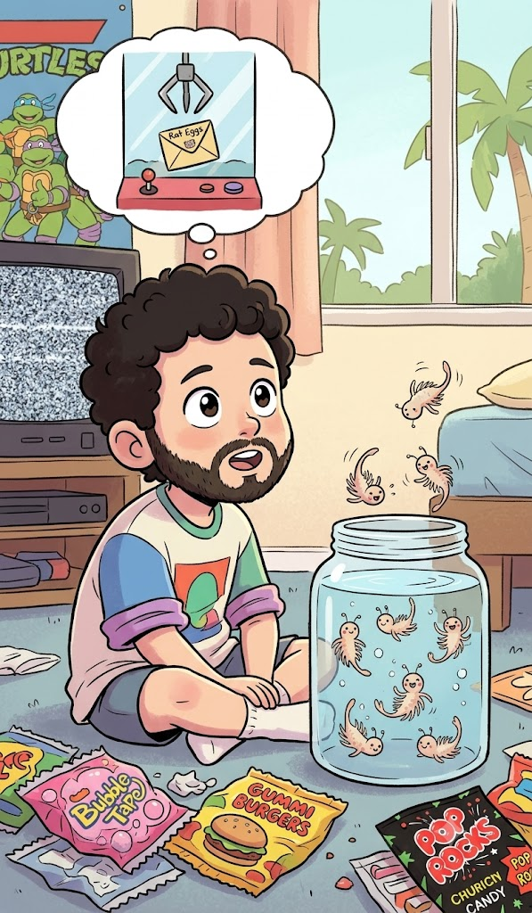

Talk about Sea Monkeys
Originally written July 17, 2010, 5:40 AM • Uploaded to Facebook on Jul 17, 2010, 5:40 AM

Today, as we were driving out toward Bacolod, the children in the car began speaking animatedly about Sea Monkeys. It had been an incredibly long time since I last contemplated Sea Monkeys—those mythical little creatures that arrive dried inside a plastic envelope, only to hatch into fruitful, floating, miniature brine shrimp when dropped into a tank. My personal history with Sea Monkeys began a long time ago, right around the era when I was roughly five years old.
Back then, Mexico’s commercial markets were still heavily plagued by severe trade tariffs and tight import restrictions. To my young mind, this protectionism meant that whenever my older cousins traveled north to the United States to go shopping, they returned home loaded with the absolute coolest electronic gadgets, toys, and sweet treats that I could have otherwise never dreamed of acquiring. It also meant that whatever luxury novelty was readily accessible across the border was entirely impossible to source locally. Ultimately, it came down to a fierce scarcity of the confectionery items that defined the 1980s marketplace: Bubble Jug, Pop Rocks, Gummi Burgers, Big League Chew, and all those bright delicacies. I only ever managed to lay eyes on them briefly and in minute quantities, never knowing when the next clandestine shipment might arrive.
From that environment of extreme scarcity, I developed an intense, internal obsession to hoard and save however many items I could successfully acquire. For these small delicacies of my childhood, I would routinely trade, barter, bet, swap, and execute all kinds of playground deals just to expand my inventory. You could say I was thoroughly addicted to all those American-made consumer goods. I was simultaneously haunted by digital ghosts; growing up, our household possessed a satellite television dish, and while watching cartoon programming, I was continuously bombarded by high-velocity commercials showcasing the coolest new toys, advanced gadgets, and especially, bright candies. I still clearly remember the glowing advertisements for Hubba Bubba Bubble Tape, which was by far the absolute apex of cool and my favorite dream product back then.
Sadly, I remember that whichever premium candies I did manage to successfully acquire, I would immediately stash away in secret, structurally complicated hiding places where my brother wouldn't easily locate them. This system meant that occasionally I would entirely lose track of my own inventory, only to stumble across a forgotten candy stash a year or two later—long after I had abandoned all hope of ever tracking it down. It was through this trial and error that I discovered firsthand exactly how long commercial candies manage to keep fresh—which is, surprisingly, not very long at all. Because of their brief, chemical shelf life, I rarely actually got to consume or enjoy the rare delicacies I spent months acquiring.
It was a highly parallel situation with the Sea Monkeys—those mythical aquatic creatures slated to materialize inside a standard glass jar. The very first time I caught sight of a live colony was when I visited the house of a close childhood friend who lived just down the lane. He functioned as a mutual friend to both my older brother and myself. In reality, the architecture of that relationship dictated that my brother was his primary peer, and I was simply tagging along for the ride—consistently granted pity by his mother, while I stood by feeling entirely left out. I eventually discovered that my brother and he would execute the absolute best adventures when I wasn't around to anchor them down. The activities they ran without me included detonating homemade fireworks, causing structural mayhem, exploring abandoned buildings, throwing sharp *shuriken* metal stars, and executing all kinds of maneuvers that are considered extremely awesome to a five-year-old child. And up to a twelve-year-old for that matter, which is precisely when the hormones shift gear and consumer tastes tend to drastically alter.
This mutual childhood friend belonged to one of the most delightfully eclectic families I’ve ever known, but what truly mattered to my five-year-old worldview was his inventory: he consistently possessed the newest gadgets, the premium action figures, the absolute creepiest ghost stories, and the largest commercial fireworks—which were almost universally illegal. To be honest, he still does. Back then, it was a constant thrill to enter his bedroom and discover what advanced toy line he had secured, hoping I might be permitted to join in the performance. I was always ecstatic to discover he had acquired the latest Super Soaker model, a rare Ninja Turtle variant, or some other premium accessory I spent my nights dreaming about. He was also the first one among our circle to acquire a real car, and it turned out to be a pretty damn fast machine, too.
Sadly, I would usually only hear about his newest acquisitions second-hand and far too late, catching rumors from my brother long after they had both played with the novelty, grown thoroughly bored of its mechanics, and cast it aside. By the time I would turn up to inspect the box, they wouldn't even bother to grant me a shred of attention. Consequently, the Sea Monkeys existed for me as one of those legendary, untouchable objects—present in the background of the room, but entirely closed off from my understanding of how they actually operated or how one played with them. When I stared into the water of that tank and demanded to know where the creatures originated, how they managed to cultivate life, or any other biological detail, the summary answer was brief: "Well, they arrived dried inside a box, and now they are full-grown." To a highly curious child driven by a dying thirst for advanced toys that were locked behind a border, that deflection was a severe blow. For years afterward, I kept a sharp eye out for a Sea Monkey kit of my own, but they were, of course, absolutely nowhere to be found inside Mexico.
So, I reluctantly filed the dream away on the high shelf of unfulfilled business, and for a long stretch of winters, I forgot about them entirely. A few years later, a major interactive children's museum opened up in my city, boasting one of the coolest gift shops I had ever seen. I’ve always been a sucker for museum gift stores, but what set this specific institution apart from the rest was that not only could you touch, see, smell, and experiment with all kinds of advanced exhibits on the floor, they actually stocked official boxes of Sea Monkeys right in the retail checkout line! They also featured a slick, imported soft-drink vending machine that produced electronic synthesized sound effects and looked as if it had been shipped straight from the streets of Tokyo. It was an incredible surprise, and one that my childhood self didn't entirely know how to process. I suppose I should have peed my pants right there on the linoleum.
A rapid, close inspection of the inventory revealed that yes, these were the exact aquatic packages I had been hunting down for years. Granted, they weren't the deluxe boxed sets complete with the illuminated plastic display stands and custom castle accessories; they were the bare, basic chemical packets of the formula. I reasoned that I could easily improvise a custom tank layout at home and that my parents would ultimately be incredibly proud of me for successfully cultivating life out of dust, pleading absolute ignorance if the experiment flooded the counter.
Then, I committed the critical mistake of turning the packet over to check the retail price tag. Premium imported novelties like these, shipped directly from the magical boundaries of the United States, were naturally subjected to extreme luxury tariffs, international embargo fees, politician distribution cuts, and a few other arbitrary premiums. The final cost amounted to more than twelve consecutive weeks of my childhood allowance. It was an astronomical mountain of capital for me at the time—a full twenty-five dollars! I stood there thoroughly saddened by the price barrier, and in my disappointment, my mind flashed back to a winter long ago at a roller-skating rink in San Antonio, Texas, where I executed the single most memorable trade of my life.
We had traveled north for the winter holidays, and the family headed out to an indoor skating rink. I flatly refused to step onto the floor; little did I know at the time that I would eventually cultivate a permanent, life-long phobia of roller-skating. While sitting on the benches waiting for my brother and cousins to finish their loops, I positioned myself in front of a vintage arcade crane game—one of those glass cabinets where you drop in a token and manipulate a metal claw to scoop up prizes. It was that mechanical challenge that kept me anchored to the corner instead of joining the family fun. Inside that glass case rested the priceless, elusive treasure I wanted to desperately extract: a series of small white envelopes labeled "Rat Eggs." I stood there fully convinced that those packets held the biological key to hatching and raising my own colony of pet rats. At that age, I lacked the basic anatomical knowledge to understand that rats did not, in fact, lay eggs.
I never did manage to extract those mythical rat eggs from the claw machine, nor did I ever walk out of that museum gift shop with a package of brine shrimp. These days, if someone were to offer me a commercial box of Sea Monkeys, I would comfort myself with the mature realization that cultivating these tiny organisms inside a plastic cup simply to watch them float, breed, and die in a tiny window of time feels a bit cruel. The desire to grow my own micro-shrimp has entirely lost its appeal, which is precisely why I am currently swinging a machete inside a sugarcane field in Negros instead. But still, on certain rainy afternoons, the mind drifts back to the unfulfilled curiosities of childhood, and I catch myself thinking that maybe, just maybe, one of these days I will regress to those early eras and finally indulge in a packet or two of Sea Monkeys.